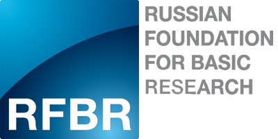

Organizers
Main organizers of the Conference
• International Center for Environmental Management of Enclosed Coastal Seas (International EMECS Center);
• «Sea Coasts» Working Group of the RAS Council on World Ocean.
Local organizers of the Conference
• Russian State Hydrometeorological University (RSHU) – Head organization;
• P.P.Shirshov Institute of Oceanology of the Russian Academy of Sciences (IO RAS);
• A.P. Karpinsky Russian Geological Research Institute (VSEGEI).
With finance suport of the Russian Foundation for Basic Research (RFBR)
With the support of the Saint Petersburg Convention Bureau

Sceintific and Informational Conference Partners
Technological platform “Technologies for Sustainable Ecological Development”
Executive Committee
Suzuki Motoyuki, President of International EMECS Center, Japan
IdoToshizo, Chair of Board of Directors, International EMECS Center (Governor of Hyogo Prefecture), Japan
Zhindarev Leonid, Head of the Working Group “Sea Coasts” RAS, Russia
Mikheev Valery, Acting Rector of the Russian State Hydrometeorological University, Russia
Watanabe Maswata, Chair of International EMECS Center Scientific and Policy Committee, Japan
Nigmatullin Robert, Director of the P.P. Shirshov Institute of Oceanology of the RAS, Russia
Petrov Oleg, Petrov Oleg, Director General of the A.P. Karpinsky Russian Geological Research Institute, Russia
Scientific Program Committee
Kosyan Ruben, Head of the Lithodynamics and Geology Laboratory, Southern Branch of the P.P. Shirshov Institute of Oceanology of the RAS, Russia – Chair
Watanabe Maswata, Professor of Chuo University, Chair of International EMECS Center Scientific and Policy Committee,Japan – Co-Chair
Brovko Petr, Professor of the Far Eastern Ferderal University, Russia
Chen Zhongyuan, Professor of State Key Laboratory of Estuarine and Coastal Research, East China Normal University, China
Ducrotoy Jean-Paul, Reading Professor Emeritus of Coastal Sciences, Institute of Estuarine and Coastal Studies, University of Hull, France
Gogoberidze George, Director of the Department of scientific research and innovations, Russian State Hydrometeorological University, Russia
Dobrolyubov Sergey, Corresponding Member of Russian Academy of Sciences, Deputy Head of Academic Council of the Russian Geographical Society, Dean of the Faculty of Geography at Moscow State University
Ignatov Evgeny, Professor of theM.V.Lomonosov Moscow State University, Russia
Kasimov Nikolay, Full-member of the Russian Academy of Sciences, First Vice-President of the Russian Geographical Society, President of the Technological platform “Technologies for Sustainable Ecological Development”
Kudryavtsev Vladimir, Professor, Head of the Satellite Oceanography Laboratory, Russian State Hydrometeorological University, Russia.
Leontyev Igor, Leading Scientist of the P.P. Shirshov Institute of Oceanology of the RAS, Russia
Lukyanova Svetlana, Leading researcher of the M.V.Lomonosov Moscow State University, Russia
Menasveta Piamsak, Vice President of Royal Institute, Thailand
Ozhan Erdal, President of MEDCOAST Foundation, Turkey
Ryabchuk Daria, Head of Department of Marine and Environmental geology of A.P. Karpinsky Russian Geological Research Institute, Russia
Spiridonov Mikhail, Professor, Leading Scientist of A.P. Karpinsky Russian Geological Research Institute, Russia
Trumbic Ivica, Consultant of UNESCO-IHP, Croatia
Wolanski Eric, Professor of James Cook University, Australia
Yanagi Tetsuo, Professor Emeritus of Kyushu University, Principal Researcher of International EMECS Center, Japan
Local Organizing Committee
Kosyan Ruben, Head of the Lithodynamics and Geology Laboratory, Southern Branch of the P.P. Shirshov Institute of Oceanology of the RAS, Russia – Chair
Gogoberidze George, Director of the Department of scientific research and innovations, Russian State Hydrometeorological University, Russia – Co-Chair
Ryabchuk Daria, Head of Department of Marine and Environmental geology of A.P. Karpinsky Russian Geological Research Institute, Russia – Co-Chair
Ershova Alexandra, Russian State Hydrometeorological University, Russia
Lednova Yulya, Russian State Hydrometeorological University, Russia
Popov Nikolay, Russian State Hydrometeorological University, Russia
Shatrova Olga, Russian State Hydrometeorological University, Russia
Students and Schools Partnership (SSP) Session Committee
Bell Wayne, Senior Associate of Washington College, USA – Chair
Ducrotoy Jean-Paul, Reading Professor Emeritus of Coastal Sciences, Institute of Estuarine and Coastal Studies, University of Hull, France
Kawai Hiroshi, Professor of Kobe University, Japan
Ryabchuk Daria, Head of Department of Marine and Environmental geology of A.P. Karpinsky Russian Geological Research Institute, Russia
Shatrova Olga, Russian State Hydrometeorological University, Russia